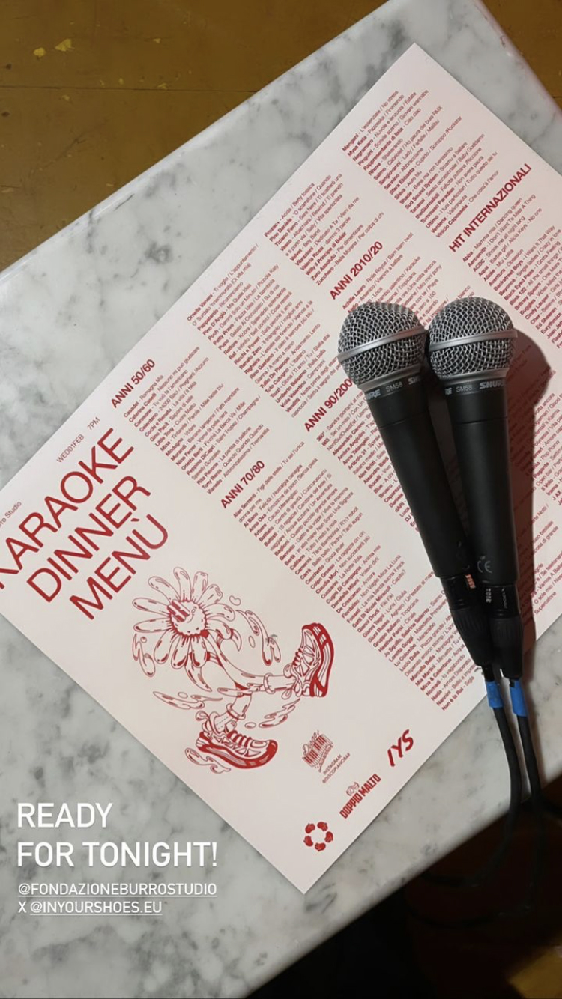
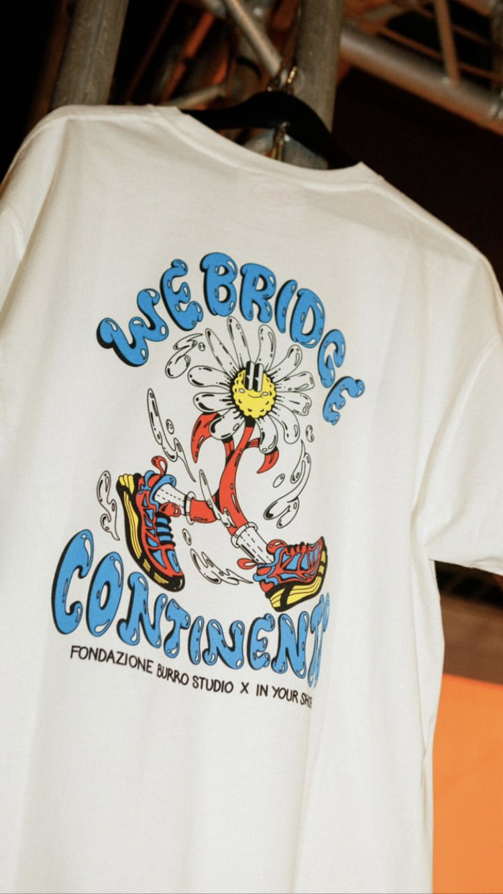
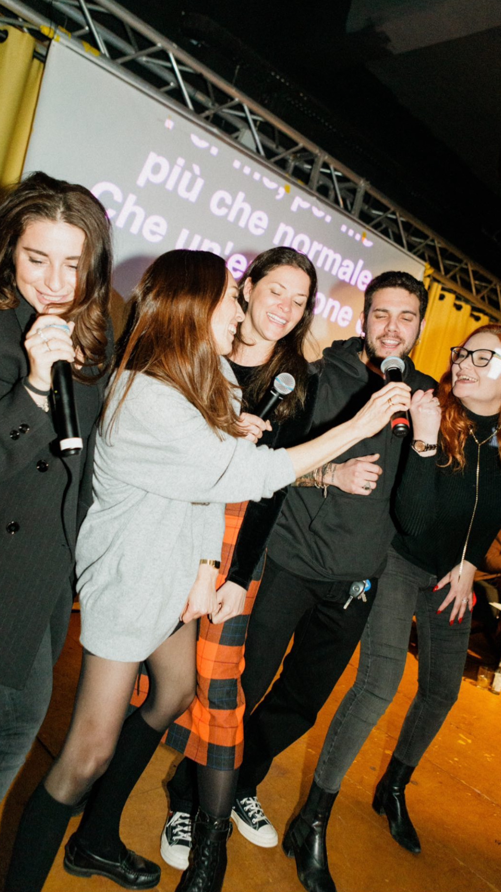
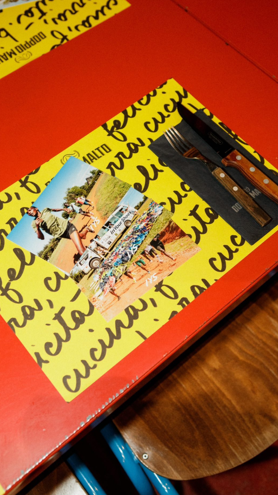
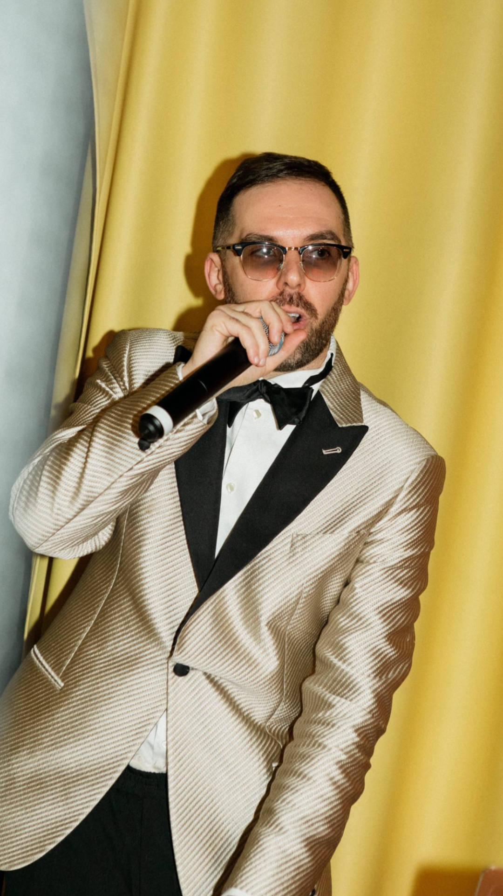
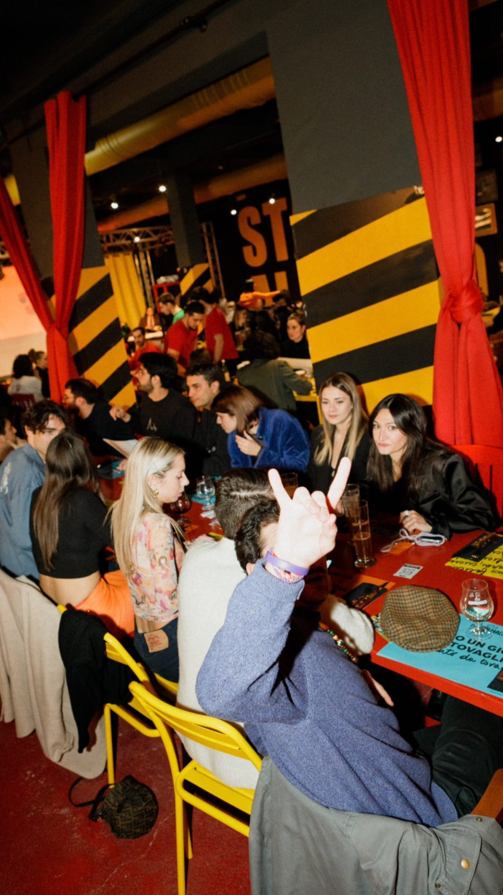
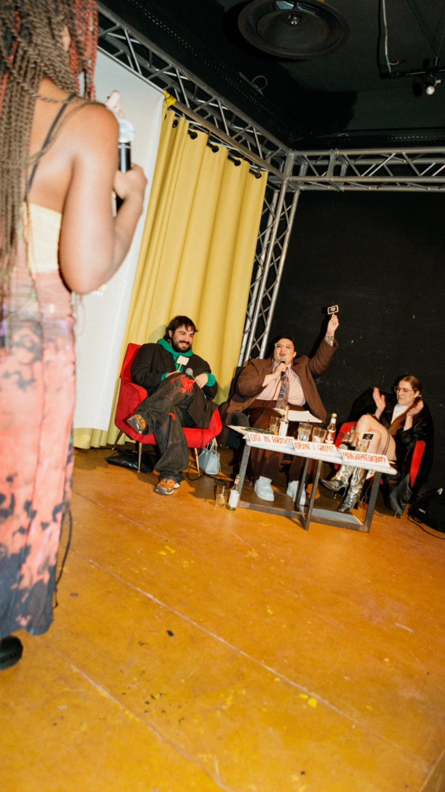
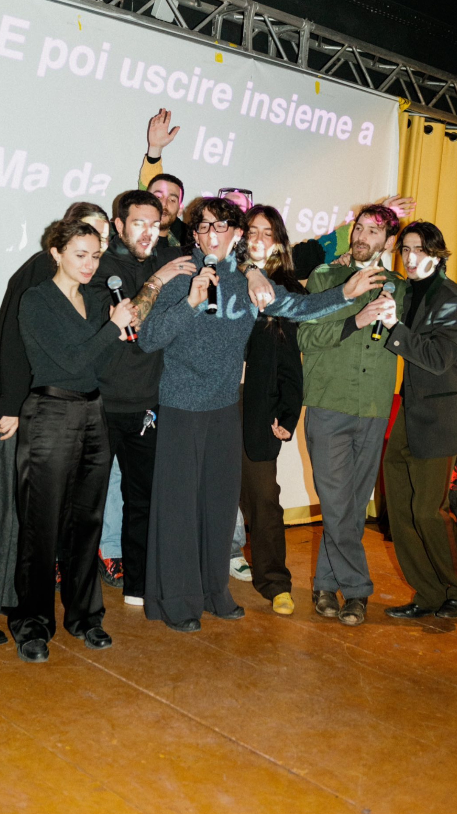
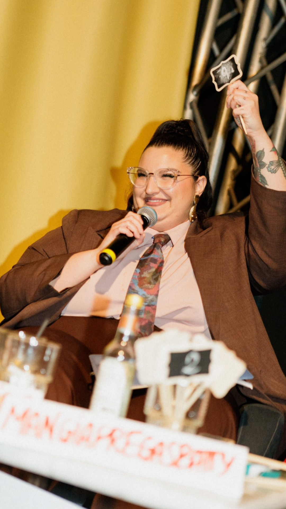
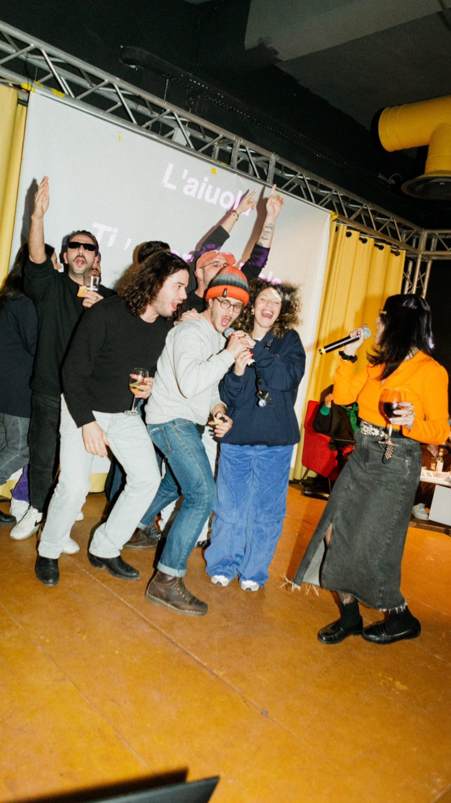

IYS (In Your Shoes) è un'organizzazione benefica che aiuta le persone bisognose fornendo l'attrezzatura che le rende più forti.
Dal 2017 raccoglie ogni anno scarpe da corsa da tutto il mondo, le etichetta con il nome dei proprietari e le porta in Kenya, a chi sogna e lotta per diventare campione.
Con questa serata abbiamo sostenuto il progetto di IYS per raccogliere scarpe da trekking e abbigliamento tecnico da donare alla comunità Sherpa in Nepal, per affrontare la stagione delle grandi spedizioni himalayane.
L'illustrazione finisce sulle t-shirt della serata: la margherita piccola sul petto, l'artwork completo con il lettering sulla schiena.
Le stesse magliette sono poi arrivate fino in Nepal.
Cena e karaoke al Doppio Malto di Viale Liguria: il menu della serata riprende la margherita in rosso, con la scaletta delle canzoni divisa per decenni.
Su Instagram il racconto della serata è passato dalle stories.










Le scarpe e l'abbigliamento raccolti durante la serata sono partiti per il Nepal e consegnati alla comunità Sherpa, insieme alle t-shirt e allo striscione "We Bridge Continents".
Personaggi, lettering e illustrazioni per eventi, merch e progetti con un messaggio.
Scrivimi e disegniamo insieme il prossimo.